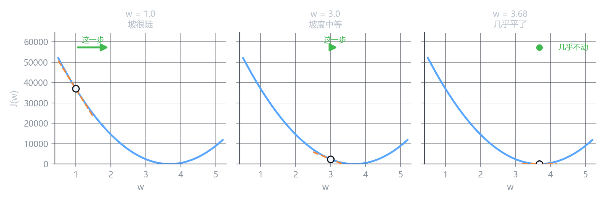

梯度的直观理解
这一课要解决什么
上一课说”沿着负梯度方向走”，但梯度到底是什么、为什么是那个方向、为什么步子大小会自己变——都没说清。
这一课把梯度本身拆开看。
先砍掉 b：只剩一个参数
两个参数的东西不好画。先令 b = 0，J 就退化成一条曲线：
J(w) = \frac{1}{2m}\sum_{i=1}^{m}\left(w x^{(i)} - y^{(i)}\right)^2
横轴只有一个 w，纵轴是损失。画出来是一条 U 形曲线，谷底在 w \approx 3.68。
导数在图上就是切线斜率
在曲线上任取一点，画一条贴着曲线的切线。这条线的斜率，就是这一点的导数 \dfrac{dJ}{dw}。
它同时告诉你两件事：
| 导数的值 | 含义 | 该怎么做 |
|---|---|---|
| 负数 | 增大 w 会降低损失 | 增大 w |
| 正数 | 增大 w 会升高损失 | 减小 w |
| 接近 0 | 这里是平的 | 差不多到头了 |
这是导数的两个独立信息，别混在一起。
符号 = 往左还是往右。 绝对值 = 这个坡有多陡 —— 也就是离谷底大概还有多远。
乘上 -\alpha 之后
更新式是：
w \leftarrow w - \alpha \frac{dJ}{dw}
-\alpha \times 导数 = 这一步的位移。图上看三处：

| 位置 | 导数 | 乘 -\alpha 后的位移 | 现象 |
|---|---|---|---|
| w = 1.0 | -27562 | +0.99 | 坡很陡，跨度大 |
| w = 3.0 | -7011 | +0.25 | 坡缓了，步子也小了 |
| w = 3.68 | -24 | +0.0009 | 几乎平了，原地不动 |
（\alpha = 3.6 \times 10^{-5}）
你不需要告诉程序”该走多远”。
离谷底远时，坡陡，梯度大，步子自动就大；靠近谷底时，坡缓，梯度小，步子自动变小。整个过程是自适应的，唯一的旋钮只有 \alpha。
如果换成”每步固定走 0.5”，你会永远在谷底附近来回弹跳，永远落不下去。
这也解释了一个训练中的常见现象
跑过训练的人都知道：loss 一开始掉得飞快，后面越来越慢，最后几乎不动。
这不是训练卡住了，是梯度在正常工作——越接近谷底，坡越平，走一步换来的进步就越少。
| 阶段 | 梯度 | loss 变化 |
|---|---|---|
| 刚开始 | 大 | 每步掉几千 |
| 中期 | 中 | 每步掉几百 |
| 接近谷底 | 小 | 每步掉个位数 |
所以看到 loss 曲线”前陡后平”是好现象。真正要担心的是它一直平着不动。
两个参数：各管各的方向
b 放回来之后，曲面有两个方向。这时候不再是”一个导数”，而是每个方向一个偏导：
\frac{\partial J}{\partial w}, \qquad \frac{\partial J}{\partial b}
把它们装成一个向量，就是梯度：
\nabla J = \left( \frac{\partial J}{\partial w},\ \frac{\partial J}{\partial b} \right)
它是一支箭头，钉在你脚下的地面上，指向”最陡的上坡方向”。
- 箭头的方向 = 往哪边走最陡
- 箭头的长度 = 有多陡
下山当然要反着走：\theta \leftarrow \theta - \alpha \nabla J。
两个分量是独立算出来的，但它们同时被应用——这就是上一课强调”同时更新”的原因。
为什么偏偏是”最陡”的方向
这一小段要一点线性代数，看不懂可以跳到下一节，结论记住就行。
假设你要往某个方向 \mathbf{u}（单位向量）走一小步，损失的变化率叫方向导数：
D_{\mathbf{u}} J = \nabla J \cdot \mathbf{u}
也就是梯度和方向向量的内积。
而内积有个性质：\mathbf{a} \cdot \mathbf{b} = |\mathbf{a}||\mathbf{b}|\cos\theta。当两个向量方向相同时（\cos\theta = 1），内积取最大值。
所以：
- \mathbf{u} 与梯度同向 → 变化率最大 → 上升最快
- \mathbf{u} 与梯度反向 → 变化率最小（最负） → 下降最快
这就是”沿负梯度走”不是近似、不是经验，而是数学上的精确最优——在只用一步、只看眼前的前提下。
这是最容易误解的一点。
梯度只保证”眼下这一步的方向最好”，不保证全局最快。地形是弯的，你走一步之后坡度就变了。
像在雾里下山：每次都朝脚下最陡的地方走，可能绕远路，也可能掉进小坑出不来（上一课的那个谷）。
它是个局部策略，不是全局策略。 深度学习的全部优化技巧，基本都在跟这件事作斗争。
学习率只是缩放
回到更新式，看两个因子的分工：
w \leftarrow w \;-\; \underbrace{\alpha}_{\text{缩放倍数}} \cdot \underbrace{\frac{\partial J}{\partial w}}_{\text{方向 + 陡峭程度}}
- 梯度决定往哪走、走多远（自带尺度）
- \alpha 只是在梯度的基础上再乘一个倍数
所以 \alpha 不改变方向。哪怕 \alpha = 0.000001，方向也还是负梯度方向，只是慢得像蜗牛。
这一点很重要：学不动的时候，先别怀疑方向错了，多半是步长的问题。
下一个专门讲 \alpha 怎么选、太大太小的具体表现。
核心概念
| 概念 | 内容 |
|---|---|
| 导数 \frac{dJ}{dw} | 曲线在该点切线的斜率；符号给方向，大小给陡峭度 |
| 偏导 | 多参数时，只对一个求导，其余按住不动 |
| 梯度 \nabla J | 所有偏导组成的向量，指向最陡上坡方向 |
| 负梯度 | 最陡下坡方向，数学上精确最优（局部） |
| 步长自适应 | 坡陡步子大，坡缓步子小，无需人工设定 |
| \alpha 的作用 | 只缩放梯度长度，不改变方向 |
| 局部性 | 只保证眼前这一步最优，不保证全局最快 |